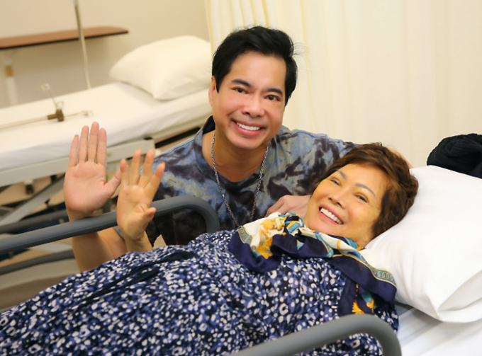

Ngọc Sơn vượt cú sốc mẹ qua đời
Ngọc Sơn nói nhiều tháng liền khóa điện thoại, mạng xã hội, nhốt mình trong nhà vì khủng hoảng khi mẹ qua đời hơn nửa năm trước. Ngọc Sơn trở lại ca hát gần đây sau biến cố mẹ qua đời ở tuổi 77 vì bệnh già hồi tháng 7/2021. Khi đó, ca sĩ đang cách ly tập trung ở Vũng Tàu vì là F1, không thể kề cận lúc mẹ ra đi. Dù chuẩn bị sẵn tâm lý, ca sĩ mất thời gian dài để gượng dậy sau cú sốc. Giọng ca Lòng mẹ cho biết: "Đó là một giai đoạn khủng khiếp với tôi. Cũng như khi bố qua đời năm 2015, tôi khóa điện thoại và mạng xã hội, tránh tiếp xúc với mọi người xung quanh vì cảm giác chênh chao, hụt hẫng".
 Ảnh: Ngọc Sơn trở lại trong vai trò giám khảo một cuộc thi nhan sắc hôm 7/1 tại TP HCM.
Ảnh: Ngọc Sơn trở lại trong vai trò giám khảo một cuộc thi nhan sắc hôm 7/1 tại TP HCM.
Ca sĩ quyết định tái xuất sau khi nhớ đến những lời dặn dò sau cuối của mẹ. Bà từng khuyên con đã là nghệ sĩ, trong mọi hoàn cảnh nên vực dậy tinh thần để trở lại sân khấu. Ca sĩ sáng tác ca khúc Ấm lại vòng tay - viết về những hoàn cảnh có người thân qua đời vì Covid-19 nhưng học cách chấp nhận, lên đường chống dịch cùng tuyến đầu. Anh nói: "Tôi muốn biến đau thương thành hành động, như ca từ bài hát: Sau cơn mưa trời lại sáng/ Ta về ấm lại vòng tay...". Cuối đời của mẹ, Ngọc Sơn dành trọn thời gian cho bà. Đầu năm 2020, anh đưa bà sang Mỹ chữa trị khối u ở cổ. Ca sĩ từng cho biết viện phí hơn 10.000 USD (232 triệu đồng) mỗi ngày vì mẹ không có bảo hiểm, nhưng điều anh quan tâm duy nhất lúc đó là sức khỏe của bà. Thấy tình trạng mẹ không khả quan, Ngọc Sơn đón bà về nước để tiện chăm sóc. Anh túc trực bên giường bệnh, hàn huyên, giúp mẹ lên tinh thần, dìu bà tập đi vì ngồi xe lăn lâu ngày. Ca sĩ nhớ mẹ từng xót xa khi thấy con trai dồn hết tiền bạc, tài sản chữa bệnh cho bà. Bà hỏi: "Con tiêu tiền như thế thì còn lại gì cho bản thân không?". Khi ấy, Ngọc Sơn động viên mẹ, nói có thể đi hát trở lại để kiếm tiền.
Ảnh: Ngọc Sơn túc trực ở bệnh viện chăm mẹ khi bà về nước trị bệnh tháng 6/2020.Những ngày ở nhà, Ngọc Sơn thường mở nhạc phẩm Lòng mẹ - ca khúc từng viết tặng bà. Bài hát ra đời giai đoạn đầu sự nghiệp của Ngọc Sơn. Năm 1987, ca sĩ biểu diễn ở một sân khấu tại quận 10, TP HCM. Lúc ấy, Ngọc Sơn chưa được nhiều khán giả chú ý, chỉ hát lót cho đàn chị như Cẩm Vân, Bảo Yến - các giọng ca ăn khách bấy giờ. Từ cánh gà bước ra sân khấu, anh hồi hộp biểu diễn sáng tác đầu tay tên Nhớ. Tiết mục kết thúc, khán giả vỗ tay vang dội, Ngọc Sơn ngập trong cảm giác bất ngờ, hạnh phúc. Thế nhưng, người duy nhất ca sĩ nghĩ đến lúc ấy là mẹ. Là sinh viên từ Bạc Liêu lên TP HCM trọ học, ca sĩ ước mẹ có mặt để chia vui. Về phòng trọ, trong cơn mưa đêm, thấm thía nỗi nhớ nhà, Ngọc Sơn đặt bút sáng tác Lòng mẹ theo giai điệu bolero. Năm 1990, sau chương trình Gala 90 ở Cung văn hóa Hữu nghị Việt - Xô (Hà Nội) - Đại nhạc hội lớn nhất bấy giờ, nhờ ca khúc, tên tuổi Ngọc Sơn vụt sáng. Anh được các hãng đĩa, bầu show săn đón, đoạt nhiều giải thưởng - tiêu biểu là giải nhì cuộc thi Đơn ca nhạc nhẹ chuyên nghiệp toàn quốc năm 1991. Từ cát-xê 10.000 đồng một đêm, Ngọc Sơn được trả 500.000 đồng đến một, hai triệu đồng mỗi sô diễn. Ngọc Sơn vươn lên vị trí là tên tuổi ăn khách trong làng nhạc chỉ sau vài năm đi hát. Lần đầu nghe con trai hát, mẹ ca sĩ cảm động vì tấm lòng hiếu thảo. Nhạc phẩm được nhiều nghệ sĩ cover, trong đó có danh ca Chế Linh, nhưng phổ biến nhất vẫn là bản thu của chính tác giả. Ngọc Sơn sinh ngày 26/11/1968 tại Hải Phòng, sống tại Bạc Liêu từ năm 1977. Năm 1987, anh cùng gia đình vào TP HCM định cư, học trường Nghệ thuật Sân khấu. Hai năm sau, anh chuyển sang học thanh nhạc dân tộc và bước vào con đường ca hát chuyên nghiệp. Anh nhanh chóng thu hút khán giả qua những sáng tác như Lòng mẹ, Giận hờn, Nhớ về em, Tình cha, Vầng trăng cô đơn...